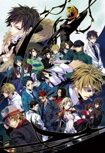

")
 
 IMDB-Wertung: 8.0 / 10
IMDB-Wertung: 8.0 / 10  Metascore:
Metascore: 
Ryuugamine Mikado ist ein Junge, der sich nach dem aufregenden Stadtleben sehnt. Auf Einladung seines Kindheitsfreundes Masaomi Kida wechselt er auf eine Schule in Ikebukuro. Masaomi warnt ihn vor einigen Leuten, denen er dort besser nicht begegnet: Shizuo Heiwajima - "The strongest Man in Ikebukuro", dem mysteriösen Izaya Orihara und den vielen Straßengangs von denen besonders die "Dollars" gefährlich sind. Mikado wird gleich am ersten Tag Zeuge einer urbanen Legende, der kopflosen Reiterin auf dem schwarzen Motorrad, Celty Sturluson, die Verbrechern in Ikebukuro das Fürchten lehrt. Eine Vielzahl schicksalhafter Ereignisse und geheimnisvoller Charaktere treffen nun in kurzer Zeit aufeinander und bringen das sonst normale Leben von Mikado und Masaomi durcheinander.
Jahr: 2010
Dauer: 24 Minuten
FSK: 12
Land: Japan Studio: Aniplex AmericaTonspuren: DD2.0 - ,
Untertitel: Deutsch,
Auflösung: 720p (1280x720) Größe: 271 MB
Genre: Action, Thriller, Drama, Animation/Trick, TV-Serie
Regisseur: Shinya Kawamo, Takahiro Ômori
Drehbuch: Ryôgo Narita
Soundtrack:
Darsteller:
 Brian Beacock als Walker Yumasaki
Brian Beacock als Walker Yumasaki Johnny Yong Bosch als Izaya Orihara
Johnny Yong Bosch als Izaya Orihara Crispin Freeman als Shizuo Heiwajima
Crispin Freeman als Shizuo Heiwajima Darrel Guilbeau als Mikado Ryugamine
Darrel Guilbeau als Mikado Ryugamine Kyle Hebert als Horada
Kyle Hebert als Horada Mela Lee als Erika Karisawa
Mela Lee als Erika Karisawa David Lodge als Kaztano
David Lodge als Kaztano Yuri Lowenthal als Shinra Kishitani
Yuri Lowenthal als Shinra Kishitani Bryce Papenbrook als Masaomi Kida
Bryce Papenbrook als Masaomi Kida Michelle Ruff als Anri Sonohara
Michelle Ruff als Anri Sonohara Carrie Savage als Mika Harima
Carrie Savage als Mika Harima Patrick Seitz als Narrator
Patrick Seitz als Narrator Keith Silverstein als Tom Tanaka
Keith Silverstein als Tom Tanaka Christopher Corey Smith als Dennis
Christopher Corey Smith als Dennis Spike Spencer als Saburo Togusa
Spike Spencer als Saburo Togusa Doug Stone als Shingen Kishitani
Doug Stone als Shingen Kishitani Joe Thomas als Shuji Niekawa
Joe Thomas als Shuji Niekawa Kirk Thornton als Takashi Nasujima
Kirk Thornton als Takashi Nasujima Kari Wahlgren als Celty Sturluson
Kari Wahlgren als Celty Sturluson Hiroshi Kamiya als Izaya Orihara
Hiroshi Kamiya als Izaya Orihara Mamoru Miyano als Masaomi Kida
Mamoru Miyano als Masaomi Kida Steve Blum als Kyohei Kadota
Steve Blum als Kyohei Kadota Karen Strassman als Anri's Mother
Karen Strassman als Anri's Mother Laura Bailey als Siri
Laura Bailey als Siri Liam O'Brien als Morita
Liam O'Brien als Morita Sam Riegel als Issac Dian
Sam Riegel als Issac Dian Sandy Fox als Haruna Niekawa
Sandy Fox als Haruna Niekawa Megan Hollingshead als Ganguro Girl
Megan Hollingshead als Ganguro Girl Stephanie Sheh als Rio Kamichika
Stephanie Sheh als Rio Kamichika G.K. Bowes als Mairu Orihara
G.K. Bowes als Mairu Orihara Doug Erholtz als Izumi
Doug Erholtz als Izumi Bridget Hoffman als Namie Yagiri
Bridget Hoffman als Namie Yagiri Dave Mallow als Kanra
Dave Mallow als Kanra Miyuki Sawashiro als Celty Sturluson
Miyuki Sawashiro als Celty Sturluson Yûichi Nakamura als Kyohei Kadota
Yûichi Nakamura als Kyohei Kadota Daisuke Ono als Shizuo Heiwajima
Daisuke Ono als Shizuo Heiwajima Jun Fukuyama als Shinra Kishitani
Jun Fukuyama als Shinra Kishitani Sanae Kobayashi als Namie Yagiri
Sanae Kobayashi als Namie YagiriDatei: X:\HD-Anime-Serien\Durarara\Durarara E01 Erste Worte.mkv seit 07.08.2017
Festplatte: Gemischt-01+Anime
 Es gibt insgesamt 67 Filme in der Gruppe 'HD-Anime-Serien'
Es gibt insgesamt 67 Filme in der Gruppe 'HD-Anime-Serien'